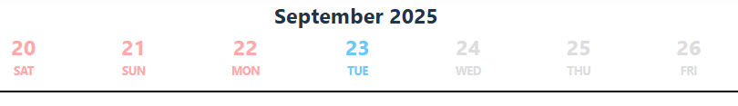
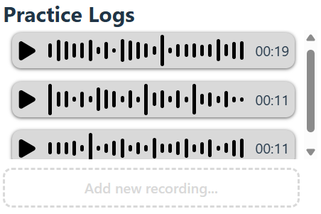
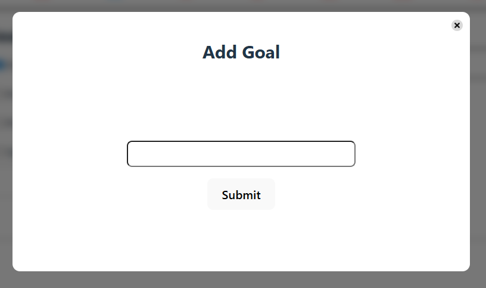
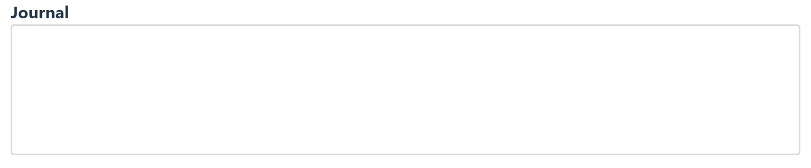
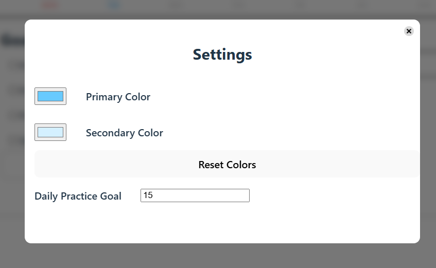
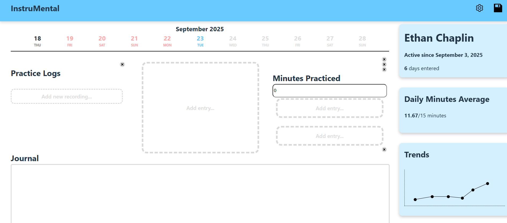

InstruMental was the first project of my User Interfaces course. We were tasked with creating a type of journaling app, to track goals, progress, journeys, etc. I decided to focus on tracking progress of learning an instrument, because I recently have decided to learn the guitar. It is a comprehensive journaling app which allows you to listen to your own playing in the past, as well as set goals to track and see your progress over time.
I hope to learn unique perspectives on this app, I can tend to box myself into a single idea, but other perspectives can break that open and help improve my designs. I’m hoping I am inspired to implement a feature I wouldn’t have thought of myself.
A common theme I got in response was the emphasis on the ability to listen to their old recordings, especially if it was the same musical piece. Not only would this demonstrate progress as a confidence booster, it also accents what parts of their playing needs work. If a certain passage sounds incorrect, that points to a place to improve.
One respondant mentioned a "streak" mechanic, a la Duolingo, as an incentive to keep practicing. Certain visual flairs, perks, or "prizes" could act as good motivation to continue.
I learned that a good emphasis is an ease of comparison. Whatever interface I design should make it easy to see previous entries.
I identified the following as design goals for the interface
The calendar scroller lets the user scroll to the desired entry. Dates which are red indicate days without an entry, dates which are black indicate a day with a journal entry, dates which are grey are future dates and shouldn't be accessible, and the date which is blue indicates the day you have currently selected. The page automatically selects today as the default date.
The entry types are the core features of the journal. They allow users to track different metrics regarding their progress, and is likely the first thing the user notices when they first enter the app.
The audio logs entry allows users to upload their progress for the day by recording them playing the instrument. They can upload as many audio files as they like for the day.
The goals entry allows users to check off goals for the day, and add more goals.
Allows the user to enter in the amount of minutes they practiced for the day. Will update the global average as seen in the sidebar.
Allows users to record thoughts, ideas, notes, etc. for the day.
Allows the users to edit the UI colors of the app to their own liking. Also allows users to enter in their average daily practice goal.
The layout editor enables the user to fully arrange their entries to their liking. They can add, remove, duplicate, and rearrange their entries to their hearts content. For each level of entry size—small, medium, and large— they can choose which entry goes in what spot. A large entry can be split into three columns of medium entries, and a medium entry can be split into three rows of small entries. Entries can be left blank, allowing for spacing.

This project was built with Svelte. No external CSS or component libraries were used, all was built from scratch. Each element was a component, except for
the sidebar and the navbar, which I kept within App.svelte.
Every menu was the same modal, with injected content. This simplified things a lot, so I didn't have to make a new component for each menu I wanted to display.
The audio player waveform was created by taking the byte stream of the audio file that the user uploads, converting it into audio samples, then separating those samples into 30 equal bins. The average value of the sample is then calculated, and the average is displayed as the height of the corresponding bar in the visualizer.
I used dynamic components to implement the layout system, allowing for the parent components to "point"
to which component it would like to show. This means that the high level page only has two LargeEntrys, which then can point to either a large entry,
or a MediumSplitter which contains three MediumEntry. The MediumEntrys can point to a medium entry or a SmallSplitter, which
contains three SmallEntrys.
There's some things I would have changed/fixed right off the bat, but due to time constraints I was unable to address them without sacrificing other integral parts of the project.
There's also functionality which I would've liked to implement, based off of feedback and my own desires for the project.